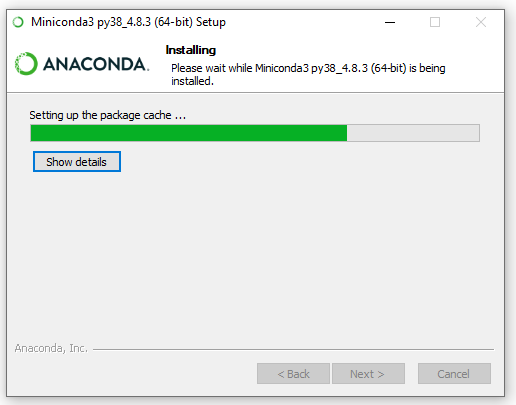
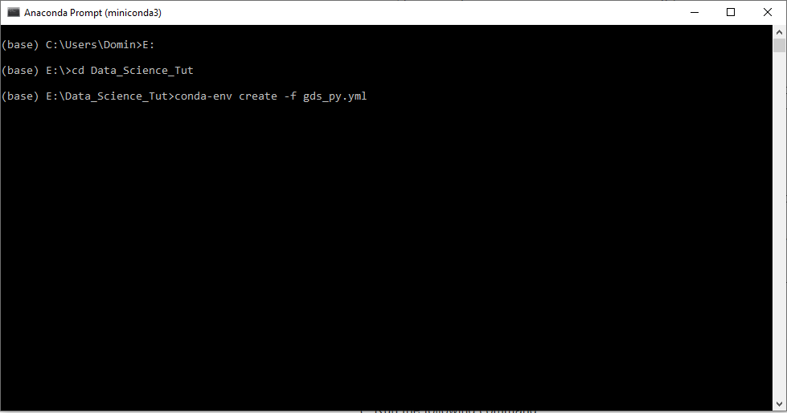
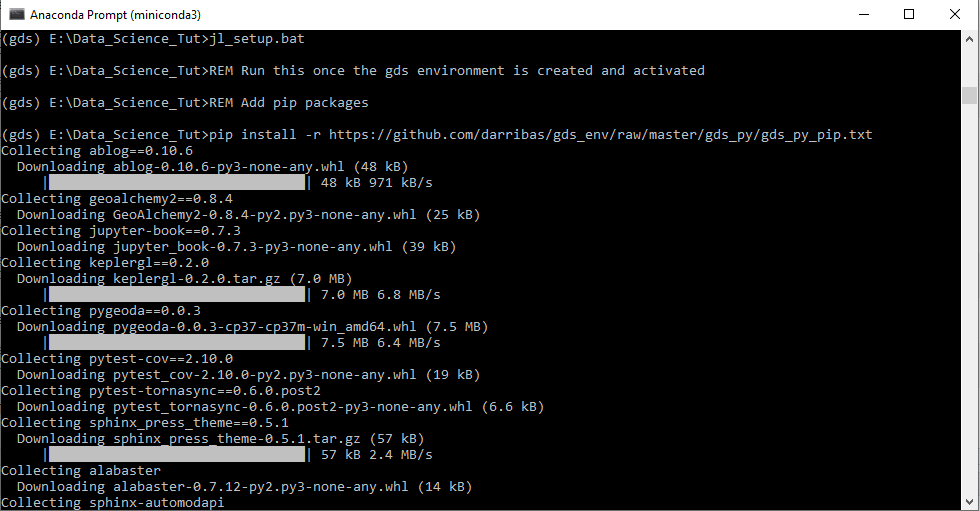
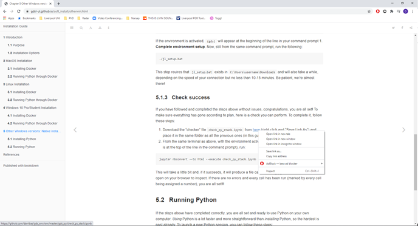

Chapter 7 Miniconda installation and Setup
7.1 Installation

- Double clicking the downloaded file will open an installation window.
- Click Next on the first step.

- Click I Agree in the next step which is the Terms and Conditions.

- In the next window, you can select if you want to install Miniconda for all users or just you.
- Check that Just Me is selected and click next.

- The next window will ask you where to install Miniconda.
- Leave the path (highlighted in blue) as is and click next.
 - The next window can be used for an advanced setup
- Leave the default settings as they are (Box ticked at Register Miniconda3 as my default Python 3.8).
- The next window can be used for an advanced setup
- Leave the default settings as they are (Box ticked at Register Miniconda3 as my default Python 3.8).

- Miniconda is now installing.
- Once the installation is complete, click Next.

• Untick all boxes in the window (unless you want further information on Miniconda, which will open in your browser) and click Finish.
7.2 Setup

- Open Miniconda by clicking on the Windows icon on the bottom left of your screen and either type Anaconda or look for the Anaconda folder in the menu.

- To open Miniconda, click on Anaconda Prompt (miniconda3). Note: From now on we will refer to the prompt as Anaconda Prompt

- This will open the Anaconda command prompt.


You now need to navigate to the folder that contains your environment (gds_py.yml) and setup (jl_setup.bat) files.
you can move to the folder by running
cdto move forward through folders andcd ..to move backwards.To run a command you simply press enter.
If your files are stored in e.g. C:/Users/Domin/Desktop/GDS_2020 you would write
cd Desktop/GDS_2020If your files are stored in a different location e.g. E:/Data_science_Tut, you would run
E:(to switch the harddrive) followed bycd Data_science_Tut.

- Once you have navigated to the location of your files, write the following in the Anaconda prompt and press enter to run it.
conda-env create -f gds_py.yml- This will install all packages that are required to complete the course and setup your Python environment. ** Note: This might take a while as it is downloading all packages (~ 500 MB).**

- The packages that are being installed will be shown in the Anaconda prompt.

- Once all packages have been installed and your environment is created, you can activate the environment with the following command:
conda activate gds7.3 Complete environment Setup

- Activate the environment by running :
conda activate gds- You can see that the start of the line has changed from (base) to (gds).

- In the same prompt, run the following command to complete the environment setup
jl_setup.bat- The prompt will show you the further packages that are being installed.
NOTE: This might take a while depending on your internet connection (at least 10-15 minutes). NOTE: Do not close the Anaconda prompt yet as we will need it again.
7.4 Check Installation
To make sure that your installation was successful and all packages have been installed we need to run one more step. Go back to the installation page and scroll down to Chapter 5.1.3.

- Download the
check_py_stack.ipynbfile by right clicking on it and selecting Save link as. - Save the file to the same location as all other files.

- Go back to your Anaconda prompt (make sure your environment is activated
conda activate gds) and enter the following command:
jupyter nbconvert --to html --execute check_py_stack.ipynb
- This will check if all packages are working properly and produce an output .html file called check_py_stack.html

- Double clicking on the check_py_stack.html file will open the file in a browser and you can check if the code has produce an output in all cells.